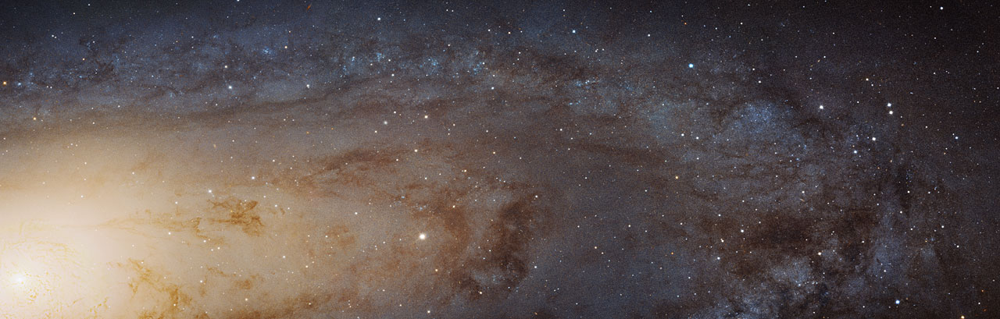

I am Maksim, Astrophysics PhD Strudent at Université Paris Cité, Laboratoire AstroParticule et Cosmologie (APC, Paris, France). I finished my Master studies at Institute Polytechnique de Paris (Palaiseau, Île-de-France, France) in High-Energy Physics, I did my Bachelor studies at Moscow Institute of Physics and Technology (Dolgoprudny, Moscow Region, Russia).
E-mail: kleimenov.maksim.i"at"gmail.com